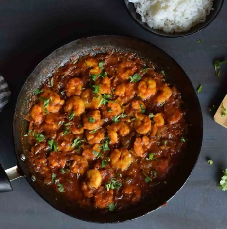

Prawn Curry
Prawn Curry is a delicious coastal delicacy made with juicy prawns
simmered in a spicy onion-tomato gravy infused with aromatic Indian
spices. It pairs wonderfully with steamed rice, jeera rice, or chapati.
Ingredients
- 500g prawns, cleaned and deveined
- 2 onions, finely chopped
- 2 tomatoes, pureed
- 1 tbsp ginger-garlic paste
- 2 green chilies, slit
- 2 tbsp oil
- 1 tsp turmeric powder
- 1½ tsp red chili powder
- 1 tsp coriander powder
- ½ tsp cumin powder
- ½ tsp garam masala
- Salt to taste
- Fresh coriander leaves for garnish
Instructions
- Heat oil in a pan and sauté onions until golden brown.
- Add ginger-garlic paste and green chilies. Cook for 1 minute.
- Add tomato puree and cook until the oil separates.
- Mix in turmeric, chili powder, coriander powder, cumin powder, and salt.
- Cook the masala for 4–5 minutes.
- Add the cleaned prawns and mix gently with the masala.
- Cover and cook for 6–8 minutes until the prawns are tender.
- Sprinkle garam masala and simmer for another 2 minutes.
- Garnish with freshly chopped coriander leaves.
- Serve hot with steamed rice or chapati.
Cooking Time
Preparation: 15 minutes
Cooking: 20 minutes
Total Time: 35 minutes
Serving Suggestion
Best enjoyed with hot steamed rice, lemon rice, jeera rice,
chapati, or soft phulkas. Add a squeeze of fresh lemon for
extra flavor.
← Back to Home